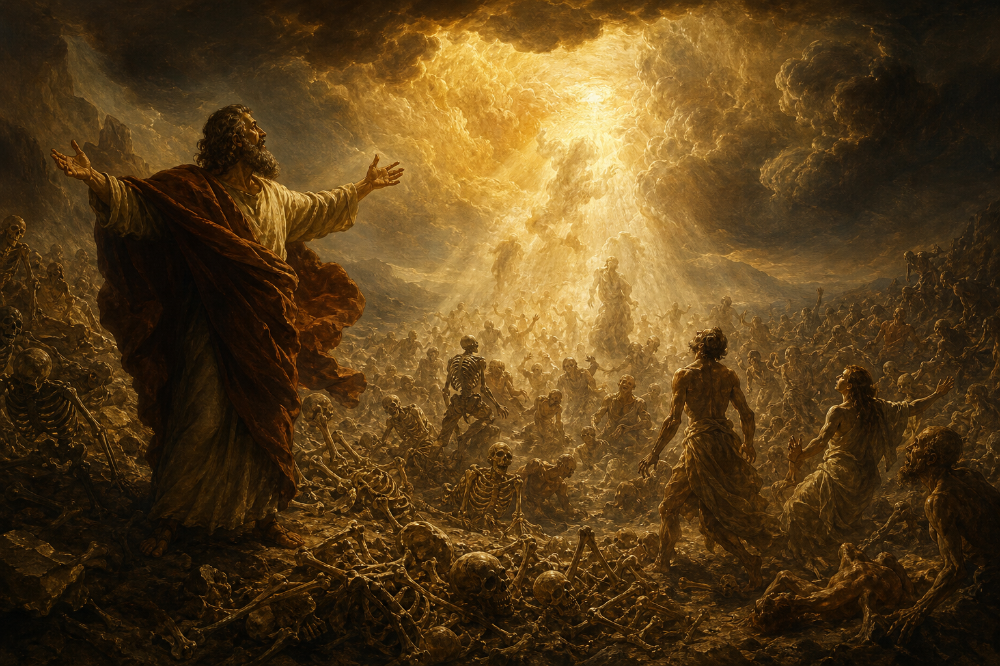

Old Testament · Book 26 of 39
Ezekiel
A priest-turned-prophet, exiled in Babylon, sees visions of God's glory leaving a corrupt temple and, later, breathing new life into a valley of dry bones.
Ezekiel is already in exile in Babylon when he receives his first vision, and his entire ministry unfolds among the captives, using dramatic symbolic acts and sweeping visions to explain why Jerusalem fell and what God will do afterward.
A new heart also will I give you, and a new spirit will I put within you: and I will take away the stony heart out of your flesh, and I will give you an heart of flesh.
What happens in Ezekiel
Ezekiel opens with an overwhelming vision of God's throne-chariot, a sign that the Lord is not confined to the temple in Jerusalem even though his people are now scattered far from it. Through strange acted-out parables, such as lying on his side for over a year and shaving his head with a sword, Ezekiel dramatizes the coming siege and judgment on Jerusalem, and he describes in a haunting vision the glory of the Lord departing the temple because of the nation's idolatry. After the city's fall, his tone shifts to restoration: he prophesies to a valley of dry bones that are raised up and clothed with flesh as a picture of national revival, promises a new heart and a new spirit for God's people, and closes the book with an extended vision of a glorious new temple into which the glory of the Lord finally returns. Throughout, Ezekiel is repeatedly called "son of man," emphasizing his role as a watchman responsible to warn the people honestly, whether they listen or not.
Why it matters
Ezekiel insists that God's holiness and presence are not permanently tied to any one building or nation's comfort, and that even after total judgment, restoration is still possible through God's own initiative, not human effort. Its vision of a transformed heart anticipates the New Testament's language of being born again by the Spirit.
Jump to a chapter
Ezekiel has 48 chapters — select one to begin reading there.